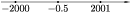

Solve the inequality: |x + 2000| $<$|x - 2001|.
We solve the inequality using the coordinate line. This inequality holds for all points with coordinate x that are closer to the point with the coordinate -2000 than to the point with the coordinate 2001. Since $ {\ frac {-2000 + 2001} {2}} $ = 0.5, then the required points are all points that located to the left of the point with the coordinate 0.5 $($see Fig.$)$.
There are other possible solutions, in particular, the expansion of modules $($three cases$)$ and squaring both sides of the inequality. (- $ \infty $; 0, 5).